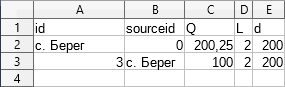
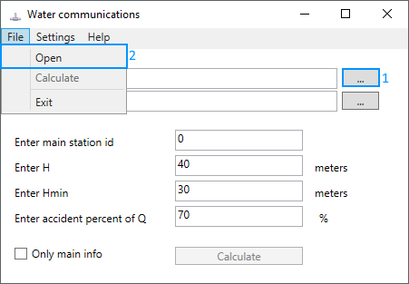
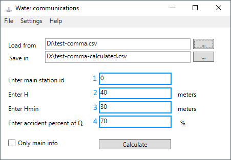
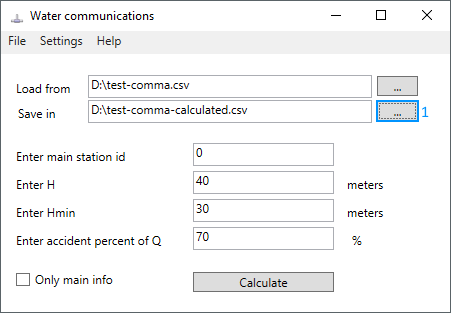
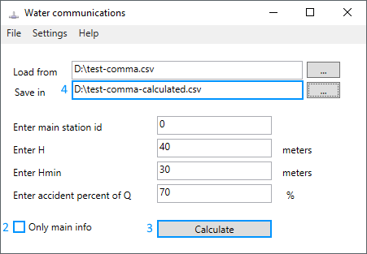
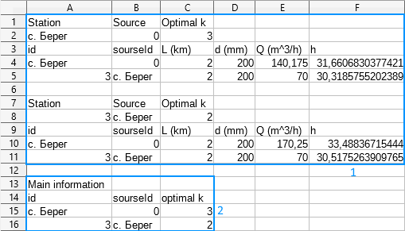
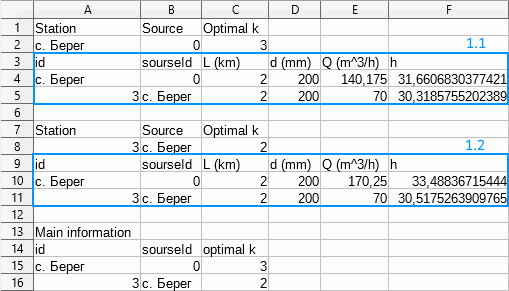

Требования ко входному файлу данных
Входным файлом является таблица в формате csv (comma-separated values), разделителем по умолчанию для данного формата является запятая (,). В случае не корректного отображения символов не латинского алфавита используйте кодировку UTF-8.
Таблица должна содержать названия пяти столбцов любого содержания, а также данные в следующем порядке:
1. Уникальное название станции водоснабжения.
2. Уникальное название станции-источника для данной станции (должно совпадать с любым в первом столбце либо с названием источника).
3. Объем воды, который проходит за единицу времени по трубе и является нормированным значением для населенного пункта с данной станцией. Единица измерения: м3/c (SI), м3/ч (ГОСТ).
4. Длина трубы, снабжающей данную станцию. Единица измерения: м (SI), км (ГОСТ).
5. Диаметр трубы, снабжающей данную станцию. Единица измерения: м (SI), мм (ГОСТ).
На картинке приведен пример правильной таблицы (единицы измерения для ГОСТ).
Загрузка входного файла
Загрузить входной файл можно через кнопку загрузки (1) или меню "Файл-Открыть" (2).
Настройка программы перед запуском вычисления
Обязтельно необходимо заполнить 4 выделенных поля программы:
(1) Название станции-источника. Название должно совпадать с названием, которое используется во входном файле.
(2) Напор на станции-источнике. Единица измерения: м (SI, ГОСТ).
(3) Минимальный напор, который должен обеспечиваться для всех других станций. Единица измерения: м (SI, ГОСТ).
(4) Процент, до которого может понижаться объем поставляемой на станции воды за единицу времени. Единица измерения: % (SI, ГОСТ).

В меню "Настройки-Системы единиц" (5) нужно установить систему единиц, которая использовалась при заполнении входного файла. Доступны системы SI (м3/c, м) и ГОСТ (м3/ч, км, мм, м).
Генерация и сохранение результата
При выборе входного файла путь сохранения генерируемого файла будет предложен по умолчанию, однако его можно сменить через кнопку выбора пути сохранения (1). Если такой файл уже существует, то он будет перезаписан.
При необходимости вывода только основной информации следует отметить флажок (2).
Если подготовка к вычислениям закончена, то следует нажать кнопку запуска вычислений (3) и дождаться сообщения об успешном окончании вычисления. Информацию об ошибках можно найти в соответствующем разделе.
Результат вычисления можно найти поуказанному пути либо открыть двойным щелчком по полю с адресом файла (4).
Информация в выходном файле
После открытия сгенерированного программой файла можно будет увидеть содержание, похожее на приведенное ниже. Если вместо нормальных символов отображаются кракозябры - смените кодировку входного файла на UTF-8 и выберите эту кодироку при открытии файла программой.
Если был отмечен флажок необходимости вывода только основной информации, то в выходном файле будет только таблица (2).
Таблица (2) содержит в себе перечень всех станций с указанием их источников и наименьшее количество аварийных участков между ними, которое позволит выполнить все указанные нормы в случае аварии на этом участке.
В случае генерации полной информации (1) и (2) будет сгенерирована таблица (1.1,1.2,...) для каждой станции. Таблица (1.х) содержит подробную информацию в случае аварии на участке трубы указанной станции при оптимальном количестве аварийных участков.